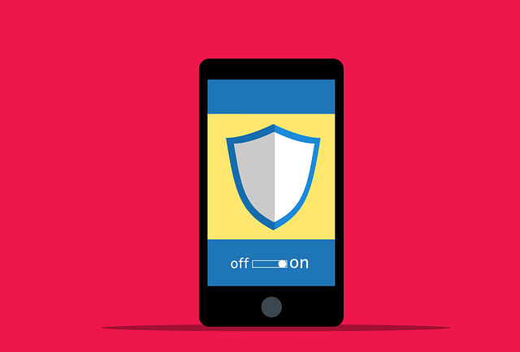

Online safety definition
Online safety is when you are cautious of what you read, download and visit on the internet. It is taking precautions by using a antivirus and being aware of phishing traps and scammers online.
